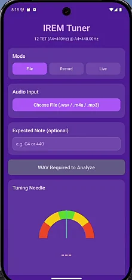

Logiciel / DSP
Application d'accordeur avancée
Un outil d'analyse de hauteur modulaire et multiplateforme bâti sur le DSP WebAudio. L'application analyse les données de fréquence en temps réel sur le web et le mobile à l'aide d'algorithmes sur mesure pour une détection précise de la hauteur sur une vaste gamme d'instruments et de systèmes d'accord.
Détails du projet
L'Application d'accordeur avancée est une plateforme modulaire de détection de hauteur bâtie sur l'API WebAudio, conçue pour fonctionner nativement dans les navigateurs web et sur les appareils mobiles sans nécessiter d'installation native.
Des algorithmes DSP sur mesure analysent les données de fréquence audio entrantes en temps réel et identifient la hauteur avec une grande précision sur une vaste gamme d'instruments et de systèmes d'accord.
L'architecture modulaire permet de développer, tester et étendre indépendamment chaque composant de détection et d'analyse, ce qui la rend adaptable autant pour l'accordage à usage général que pour des applications spécialisées de recherche musicale.